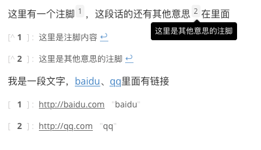

markdown里怎么加引用注释或脚注
这篇文章发布于 2020/07/06，归类于 计算机基础与开发工具
标签：
md添加脚注，markdown里怎么加引用注释或脚注，markdown脚注，md脚注
一般我们只是在markdown添加链接，但怎么在markdown里加脚注呢？下面来看看
这里有一个注脚[^1]，这段话的还有其他意思[^2]在里面
[^1]:这里是注脚内容
[^2]:这里是其他意思的注脚注脚放到中间也可以，下面是具体效果

md中链接的另一种写法
我是一段文字，[baidu][1]、[qq][2]里面有链接
[1]: http://baidu.com "baidu"
[2]: http://qq.com "qq"